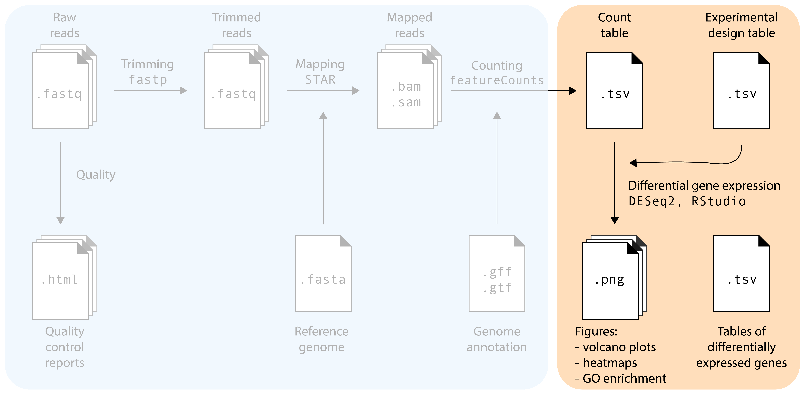
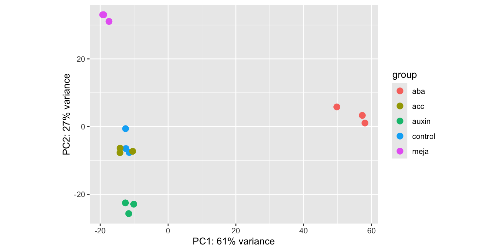
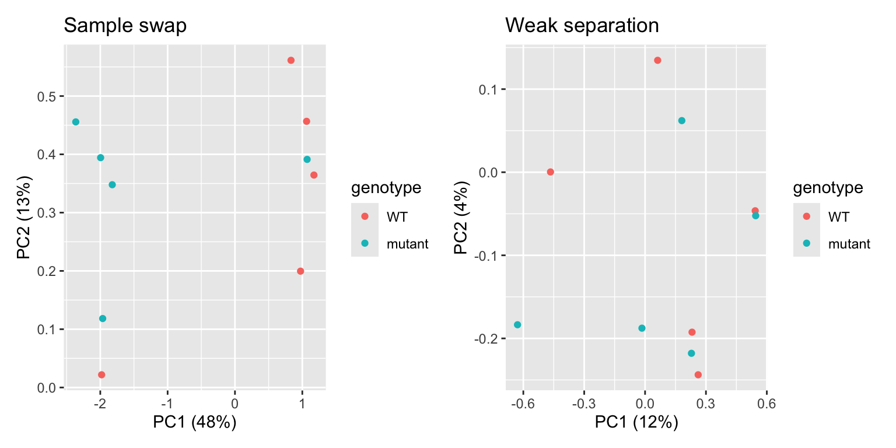
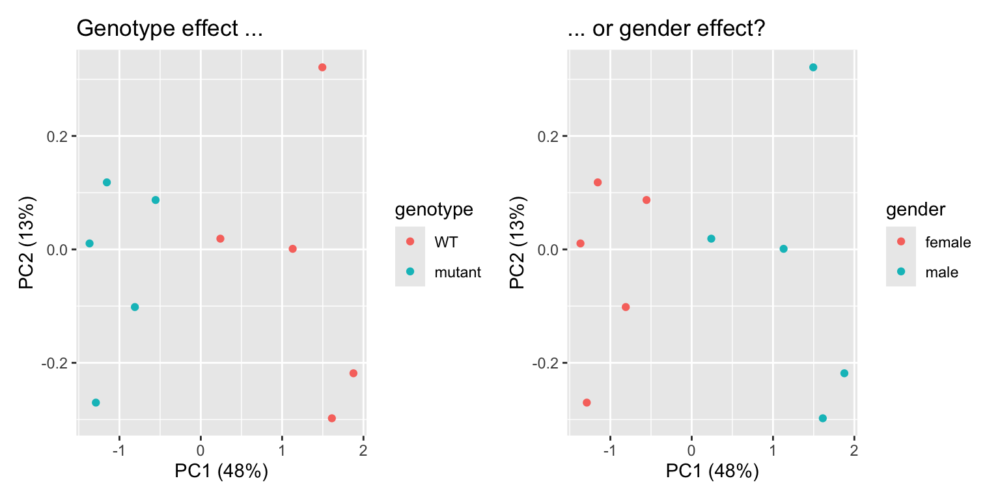
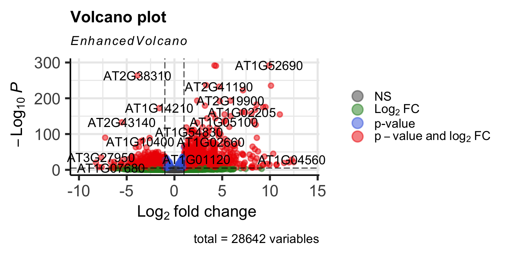
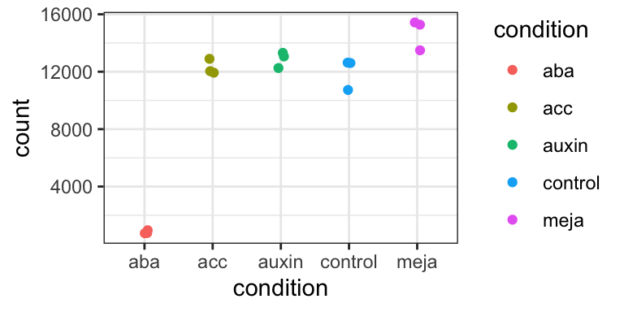
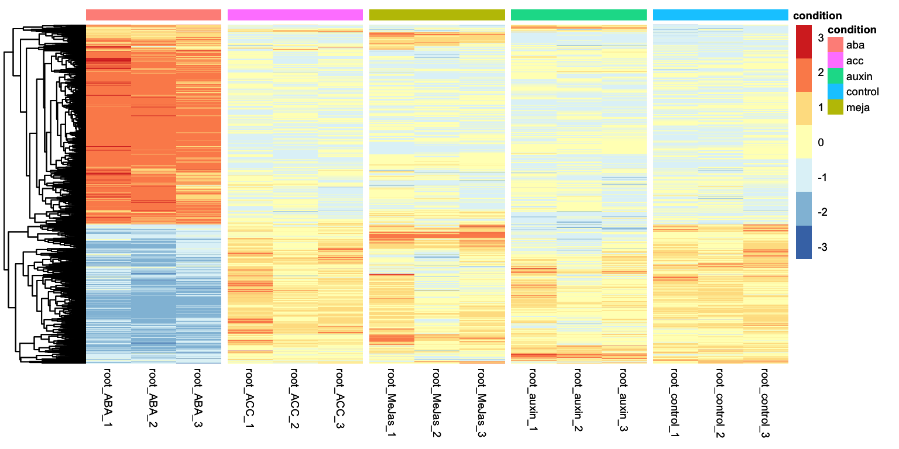

RNA-seq-deseq2
├── data/
│ ├── Deforges_2019-raw-counts.csv
│ └── Deforges_2019-experiment-design.csv
├── data_processed/
│ └── Normalized counts will go here
├── results/
│ └── Graphs will go here
└── RNA-seq.RDifferential gene expression analysis

The main goal of most RNA-seq experiments is to discover which genes are differentially expressed between different groups (treatments, tissues, genotypes): the list of differentially expressed genes (DEGs). After the previous section, we now have a count table with the number of reads that map to each gene in each sample. How do we get to our goal from this table? We will need to use statistical models! In this section, we will use the DESeq2 package in R for differential gene expression analysis. Several other packages with different statistical models and assumptions exist (e.g. EdgeR and Limma): we pick DESeq2 because it is robust, widely-used, and user friendly.
Setup
Note
Let’s first create a project folder for this tutorial. It should be located in your MDA folder. In the end; it should look like this:
First create all the folders:
cd MDA
mkdir RNA-seq-deseq2
cd RNA-seq-deseq2
mkdir data
mkdir data_processed
mkdir results
touch RNA-seq-analysis.R- 1
-
This is a new shell command!
touchsimply creates an empty file, directly from the command line.
Then download the count table and experimental design data:
cd data
wget https://github.com/mishapaauw/molecular-data-analysis/raw/refs/heads/main/part2-rna-seq/data/Deforges_2019-raw-counts.csv
wget https://github.com/mishapaauw/molecular-data-analysis/raw/refs/heads/main/part2-rna-seq/data/Deforges_2019-experiment-design.csvThen, in open the new .R script in Rstudio.
Reading the count table into DESeq2
In this tutorial, we will explore the transcriptomes of root samples of Arabidopsis thaliana plants that were treated with different plant hormones. Control samples were not treated with any plant hormone. The experimental design is simple: there are three replicates in each condition: control (no hormone), aba (abscisic acid), meja (methyl-jasmonate), acc (the precursor of the hormone ethylene), and auxin.
First we will load the packages that we need:
R
set.seed(1992)
library(DESeq2)
library(tidyverse)
library(ggrepel)Then, load the count table first:
R
raw_counts <- read.csv("data/Deforges_2019-raw-counts.csv", header = T, stringsAsFactors = F)
raw_counts <- raw_counts %>% column_to_rownames("Geneid")
raw_counts[1:4,1:4]- 1
-
Make sure you use the correct path to where your data is stored. Depending on your folder structure, you may need to adapt the filepath. Here, we use:
data/Deforges_2019-raw-counts.csv. - 2
-
Here, we store the column
Geneidas row names instead of a dedicated column.
root_control_1 root_control_2 root_control_3 root_auxin_1
AT1G01010 2029 1481 2694 2450
AT1G01020 1626 1608 1895 1816
AT1G01030 150 230 375 149
AT1G01040 3174 2599 4260 3753That looks good! One quick check we can do is to find how many reads were assigned to genes in each sample. This gives an indication of the library size. Since each column represents a sample, we can do this with the colSums() function:
R
colSums(raw_counts)root_control_1 root_control_2 root_control_3 root_auxin_1 root_auxin_2
73300894 66958252 87492728 74813938 72434018
root_auxin_3 root_ABA_1 root_ABA_2 root_ABA_3 root_MeJas_1
69570919 53187831 63019089 59509057 78577761
root_MeJas_2 root_MeJas_3 root_ACC_1 root_ACC_2 root_ACC_3
68159083 65239269 75606427 59519539 75260505 That seems fairly equal across samples. Still, it ranges from 53M reads to about 87M reads, so we will need to normalize for that later on.
New, let’s look at the metadata of the experiment:
R
metadata <- read.csv("data/Deforges_2019-experiment-design.csv", header = T)
head(metadata) sample condition
1 root_control_1 control
2 root_control_2 control
3 root_control_3 control
4 root_auxin_1 auxin
5 root_auxin_2 auxin
6 root_auxin_3 auxinNow, it’s important to note that DESeq2 expects the sample names (columns in count table) to exactly match the sample names in the metadata file, and be in the same order! For this small dataset, we can inspect that by eye. In addition, and probably useful for larger datasets, we can use the all() function to check this.
R
all(colnames(raw_counts) == metadata$sample)- 1
-
If this does not return
TRUE, you need to reorder or rename sample names in one of your files.
[1] TRUECreating the dds object
We are now ready to create a DESeqDataSet object, commonly abbreviated as dds. The dds object will contain our count tables and metadata, but later, also the normalized counts and differentially expressed gene lists. As such, the dds objects help us keep things neat in our RStudio session. To make one, we need to specify our experimental design ‘formula’. In this tutorial, there’s only one variable: the design formula will be as simple as ~ condition. However, in multi-factor experiments it can include additional experimental variables, but also include unwanted sources of variation such as RNA isolation batch. Including these factors in the design formula will help DESeq2 to account for these soures of variation, allowing more accurate estimation of the primary condition’s effect. For example, in an experiment with a potential batch effect, treatments, and different genotypes: ~ batch + treatment + genotype. If you also want to model the interaction, that is whether the treatment effect varies by genotype, change the + to a *: ~ batch + treatment * genotype.
R
dds <- DESeqDataSetFromMatrix(countData = raw_counts,
colData = metadata,
design = ~ condition)Warning in DESeqDataSet(se, design = design, ignoreRank): some variables in
design formula are characters, converting to factorsInspecting sample clustering via PCA
As essential step in RNA-seq analysis is to inspect similarity between samples. In particular, we should confirm that replicates with the same treatment are similar to each other, and make sure that the experimental condition is the major source of variation in the data. In addition, these quality-control explorations will also help identify if any samples behalve as outliers, or whether there may have been a sample swap. We will use Principal Component Analysis (PCA) to do this. PCA is a dimensionality reduction technique that transforms complex high-dimensional data (like expression of thousands of genes) into a limited number of new variables (‘principal components’) that capture the most variation in the dataset.
Performing variance stabilization
Before performing the PCA itself, we need to take an important feature of RNA-seq data into account: the variance of a gene is strongly correlated to the expression level of the gene. In statistics language, our data is not homoscedastic, while PCA assumes homoscedastic data. We can solve this by performing a variance stabilizing transformation vst():
R
variance_stabilized_dataset <- vst(dds, blind = TRUE)
variance_stabilised_counts <- assay(variance_stabilized_dataset)Let’s inspect the average expression and standard deviation of each gene to show that this transformation worked. In the following plots, each dot represents one A. thaliana gene:
Show the code to make the plots
R
library(patchwork)
without_vst <- raw_counts %>%
as.data.frame() %>%
rownames_to_column("gene") %>%
pivot_longer(cols = - gene, names_to = "sample", values_to = "count") %>%
group_by(gene) %>%
summarise(gene_mean = mean(count), gene_sd = sd(count)) %>%
ungroup() %>%
ggplot(aes(x = log10(gene_mean), y = log10(gene_sd))) +
geom_point(alpha = 0.2) +
labs(x = "Gene count average\n(log10 scale)",
y = "Gene count standard deviation\n(log10 scale)") +
ggtitle("No variance stabilization")
with_vst <- variance_stabilised_counts %>%
as.data.frame() %>%
rownames_to_column("gene") %>%
pivot_longer(cols = - gene, names_to = "sample", values_to = "count") %>%
group_by(gene) %>%
summarise(gene_mean = mean(count), gene_sd = sd(count)) %>%
ungroup() %>%
ggplot(aes(x = log10(gene_mean), y = log10(gene_sd))) +
geom_point(alpha = 0.2) +
labs(x = "Gene count average\n(log10 scale)",
y = "Gene count standard deviation\n(log10 scale)") +
ggtitle("Variance stabilized")
without_vst | with_vst
Indeed, we can observe that genes that are highly expressed (have high mean count) also have a high standard deviation. This correlation is no longer there after stabilizing the variance.
Performing the PCA
Okay, finally we are ready to perform the PCA. DESeq2 makes this very easy for us with a simple function, plotPCA(), which directly gives us a PCA plot.
R
plotPCA(variance_stabilized_dataset)
Let’s break this plot down:
- We see that principal component 1 (
PC1) explains 61% of the variance, whilePC2explains 27%. PC1separates theabasamples from all other conditions.PC2separatesmejaandauxintreated sampled from thecontrolsamples, both in a different direction.acctreated samples seem to cluster together withcontrolsamples. So it looks like the impact ofaccon the Arabidopsis transcriptome is limited.- Different replicates from the same treatment plot close together in PCA space: that’s good news.
If you want to have full control and make the PCA plot yourself in ggplot2, you can add returnData=TRUE). You can then save the PCA coordinates in a dataframe, ready for manual plotting.
R
pca_data <- plotPCA(variance_stabilized_dataset, returnData=TRUE) While it is impossible to give examples of all situations that can occur in PCAs, we highlight a few below in fake PCA plots:
Show the code to make the plots
R
df_swap <- data.frame(
PC1 = c(rnorm(5, mean = 1, sd = 0.2),
rnorm(5, mean = -2, sd = 0.2)),
PC2 = c(rnorm(5, mean = 0.4, sd = 0.2),
rnorm(5, mean = 0.3, sd = 0.2)),
genotype = c(rep("WT", 4), "mutant", rep("mutant", 4), "WT"))
df_weak_sep <- data.frame(
PC1 = c(rnorm(5, mean = 0.2, sd = 0.45),
rnorm(5, mean = 0, sd = 0.6)),
PC2 = c(rnorm(5, mean = 0, sd = 0.25),
rnorm(5, mean = 0, sd = 0.25)),
genotype = rep(c("WT", "mutant"), each = 5)
)
p1 <- df_swap %>% ggplot(aes(x = PC1, y = PC2, colour = genotype)) + geom_point() +
xlab("PC1 (48%)") +
ylab("PC2 (13%)") +
ggtitle("Sample swap")
p2 <- df_weak_sep %>% ggplot(aes(x = PC1, y = PC2, colour = genotype)) + geom_point() +
xlab("PC1 (12%)") +
ylab("PC2 (4%)") +
ggtitle("Weak separation")
p1 | p2
In the first plot, we see one WT sample clustering with mutant samples, and vice versa. This is a clear indication that two samples were swapped somewhere in the process: during sampling, RNA extraction, cDNA synthesis, library prep, or in the metadata file. If you can trace this back in your labjournal, you could swap the sample label back. If not… it’s probably better to discard these two samples completely. In the second plot, we can see that there’s no clear separation between WT and mutant samples. In addition, the two PCs explain little of the variance present in the dataset. This is an indication that the genotype actually has little impact on the transcriptome. While worrying, this does not mean that all is lost! You can still proceed to differential expression analysis, maybe the difference between the two genotypes is quite subtle.
Show the code to make the plots
R
df_confounding_1 <- data.frame(
PC1 = c(rnorm(5, mean = 1, sd = 0.45),
rnorm(5, mean = -1, sd = 0.6)),
PC2 = c(rnorm(5, mean = 0, sd = 0.25),
rnorm(5, mean = 0, sd = 0.25)),
genotype = rep(c("WT", "mutant"), each = 5),
gender = rep(c("male", "female"), each = 5)
)
p1 <- df_confounding_1 %>% ggplot(aes(x = PC1, y = PC2, colour = genotype)) + geom_point() +
xlab("PC1 (48%)") +
ylab("PC2 (13%)") +
ggtitle("Genotype effect ...")
p2 <- df_confounding_1 %>% ggplot(aes(x = PC1, y = PC2, colour = gender)) + geom_point() +
xlab("PC1 (48%)") +
ylab("PC2 (13%)") +
ggtitle("... or gender effect?")
p1 | p2
In this example, we see separation of our wildtype and mutant samples. Experiment succesful! … or is it? Upon closer inpection, we can see that gender of our samples also separates our samples in the same way. It turns out that all wildtypes were male mice, and all mutants were female. We will therefore never know if differentially expressed genes are caused by the genotype, or simply by the gender of the mice: a clear case of confounding variable. This is an experimental design flaw, and should have been caught before sampling. Yet, it happens!
Differential gene expression analysis
DESeq2 handles all steps of DEG analysis, from sample normalization (e.g., to account for difference in sequencing depth per sample) to the statistical models and tests in one function: DESeq(). Easy! We run this function with the dds object as input, while storing the output in the dds object as well. In this way, we will ‘update’ the dds object with the new analysis. R will now print all the individual steps that the DESeq() function performed for us. DESeq() normalizes the counts again with a different algorithm than variance stabilization.
R
dds <- DESeq(dds)estimating size factorsestimating dispersionsgene-wise dispersion estimatesmean-dispersion relationshipfinal dispersion estimatesfitting model and testingLet’s write the normalized counts to a file:
R
norm_counts <- counts(dds, normalized = TRUE)
norm_counts <- norm_counts %>%
as.data.frame() %>%
rownames_to_column("gene_id")
write.csv(norm_counts, file = "data_processed/normalized_counts.csv", row.names = FALSE)
Solution
You could make a boxplot of all the read counts per sample, for both raw counts and normalized counts.
R
# Get the raw counts and the normalized counts
raw_counts <- counts(dds, normalized=FALSE)
normalized_counts <- counts(dds, normalized=TRUE)
# Convert matrices to tidy format to visualize difference between raw and scaled counts
tidy_raw <- raw_counts %>%
as.data.frame() %>%
rownames_to_column("Gene") %>%
pivot_longer(cols = -Gene, names_to = "Sample", values_to = "counts") %>%
mutate(dataset = "raw")
tidy_normalized <- normalized_counts %>%
as.data.frame() %>%
rownames_to_column("Gene") %>%
pivot_longer(cols = -Gene, names_to = "Sample", values_to = "counts") %>%
mutate(dataset = "normalized")
tidy_total <- rbind(tidy_raw, tidy_normalized)
# boxplot shows that the medians of the samples moved closer to log10(2)
tidy_total %>%
ggplot(aes(x = Sample, y = log10(counts + 1))) +
geom_boxplot(aes(fill = dataset)) + facet_wrap(~ dataset)
Notice how the median read counts of the normalized datasets are closer together than those of the raw read counts.
Lists of DEGs between two treatments
Now, we are ready to extract lists of differentially expressed genes between two treatments from the dds object. We will the use results() function to do so. First, we will specify the contrast that we want to test. The argument alpha is used to specify the p-value cutoff for significance, the default value is alpha = 0.1. We will use 0.05 here. We will also sort the table on p-value:
R
contrast_to_test <- c("condition", "aba", "control")
res_aba_vs_control <- results(dds, contrast=contrast_to_test, alpha = 0.05)
summary(res_aba_vs_control)
results_aba_vs_control <- res_aba_vs_control %>%
as.data.frame() %>%
rownames_to_column("gene") %>%
arrange(padj)
head(results_aba_vs_control)
write.csv(results_aba_vs_control, 'data_processed/aba_vs_control.csv', quote = FALSE, row.names = FALSE)- 1
- Generate results table
- 2
- Print a quick summary of the results: how many genes are significantly differentially expressed?
- 3
-
Turn results table into a data frame, generate a
genescolumn from the rownames, make a new column with-log10transformed p-values, then sort by adjusted p-value. - 4
- Write to a file!
out of 26832 with nonzero total read count
adjusted p-value < 0.05
LFC > 0 (up) : 5276, 20%
LFC < 0 (down) : 5099, 19%
outliers [1] : 8, 0.03%
low counts [2] : 3111, 12%
(mean count < 2)
[1] see 'cooksCutoff' argument of ?results
[2] see 'independentFiltering' argument of ?results
gene baseMean log2FoldChange lfcSE stat pvalue
1 AT1G52690 15517.069 9.921450 0.2179358 45.52464 0.000000e+00
2 AT4G27410 4165.375 4.188831 0.1075092 38.96252 0.000000e+00
3 AT2G15970 33541.245 4.348850 0.1184050 36.72861 2.552906e-295
4 AT2G38310 10542.478 -3.866008 0.1104888 -34.99005 3.187644e-268
5 AT3G17790 3420.915 3.316818 0.1000675 33.14579 6.511395e-241
6 AT5G52300 2675.359 10.110645 0.3058389 33.05873 1.165299e-239
padj
1 0.000000e+00
2 0.000000e+00
3 2.017902e-291
4 1.889715e-264
5 3.088094e-237
6 4.605456e-236In this dataframe, there is a row for each gene that appears in the Arabidopsis genome annotation. We’ll discuss the most important columns below:
baseMean: is the mean of the normalized counts, across all samples.log2FoldChange: is a way to describe how much the gene expression changes between the two conditions tested.pvalueandpadj: the result from the Wald test to test whether the expression is different between the two conditions tested.pvalueis the ‘raw’, uncorrected value, whilepadjis adjusted for multiple testing (of thousands of genes).
Shrinkage of fold changes
DESeq2 allows for the shrinkage of log2FoldChanges values towards zero if the information for a gene is low (e.g. low amount of counts). See DESeq2 vignette for more information. In this tutorial, we will skip this step.
Volcano plots
One way to visualize DEG results is to display them in a Volcano plot. Such a plot shows a measure of effect size (log2FoldChange) versus a measure of significance (padj). There are tools available (developed by Joachim Goedhart, assistant professor at SILS) to help you make such a plot. But we can also make volcano plots ourselves in R:
First we will make a ‘quick and dirty’ plot using the EnhancedVolcano package:
R
library(EnhancedVolcano)
EnhancedVolcano(res_aba_vs_control,
lab = rownames(res_aba_vs_control),
x = 'log2FoldChange',
y = 'padj',
legendPosition = 'right')
It works, but it’s not very beautiful. We can make one ourselves using ggplot2 for full control of the plot:
R
# Define fold change and p-value cutoffs
lfc_cutoff <- 2
padj_cutoff <- 0.05
# Make new categorical variable containing significance information
results_aba_vs_control <- results_aba_vs_control %>%
mutate(significance = case_when(
padj < padj_cutoff & log2FoldChange > lfc_cutoff ~ 'Significantly upregulated',
padj < padj_cutoff & log2FoldChange < -lfc_cutoff ~ 'Significantly downregulated',
padj < padj_cutoff ~ 'Significant but small effect size',
TRUE ~ 'Not significant'
))
colors <- c("Significantly upregulated" = "#E69F00",
"Significantly downregulated" = "#56B4E9",
"Not significant" = "gray80",
"Significant but small effect size" = 'grey50')
# select top 10 genes to highlight
top_genes <- results_aba_vs_control[1:10, ]
volcano <- results_aba_vs_control %>%
ggplot(aes(x = log2FoldChange, y = -log10(padj), colour = significance)) +
geom_point(alpha = 0.5, size = 1) +
geom_hline(aes(yintercept = -log10(padj_cutoff)), linetype = "dashed") +
geom_vline(aes(xintercept = lfc_cutoff), linetype = "dashed") +
geom_vline(aes(xintercept = -lfc_cutoff), linetype = "dashed") +
geom_point(data = top_genes, shape = 21, fill = NA, color = "black", size = 1.2) +
geom_text_repel(data = top_genes, aes(label = gene), size = 3, min.segment.length = 0) +
scale_color_manual(values=colors) +
xlim(c(-10,10)) +
theme_bw()
ggsave("results/volcano_plot_aba_vs_control.png", volcano, width = 14, height = 8, units = "cm")
volcano 
We can plot the DESeq2-normalized counts of two genes, just to confirm that the volcano plot is correct. We pick one that is highly upregulated in aba treated samples (AT5G52310), and one that is strongly downregulated (AT2G38310).
R
gene_1 <- plotCounts(dds, gene="AT5G52310", intgroup="condition",
returnData=TRUE)
gene_2 <- plotCounts(dds, gene="AT2G38310", intgroup="condition",
returnData=TRUE)
gene_1 %>% ggplot(aes(x = condition, y = count, colour = condition)) +
geom_jitter(width = 0.05) +
theme_bw()
gene_2 %>% ggplot(aes(x = condition, y = count, colour = condition)) +
geom_jitter(width = 0.05) +
theme_bw()
Yep, that seems about right.
Heatmap
Alternatively, we could also display the expression levels of the DEGs in a heatmap. With the following code, we make a ‘tidy’ dataframe from the variance stabilised counts, and select only the genes that we consider DEGs. Remember, these are the genes that passed both a padj threshold and log2FoldChange threshold in the aba vs control contrast.
R
variance_stabilised_df <- variance_stabilised_counts %>%
as.data.frame() %>%
rownames_to_column("gene") %>%
pivot_longer(cols = - gene, names_to = "sample", values_to = "count")
aba_selection <- results_aba_vs_control %>%
filter(padj < padj_cutoff) %>%
filter(abs(log2FoldChange) > lfc_cutoff) %>%
pull(gene)
vsd_selection <- variance_stabilised_df %>%
filter(gene %in% aba_selection) %>%
merge(metadata, by = "sample")Then, we draw a heatmap using the tidyheatmaps package. Essentially, this is a tidyverse-style wrapper of the more famous heatmap package pheatmap.
R
library(tidyheatmaps)
heatmap <- tidyheatmap(df = vsd_selection,
rows = gene,
columns = sample,
values = count,
scale = "row",
annotation_col = c(condition),
gaps_col = condition,
cluster_rows = TRUE,
color_legend_n = 7,
show_rownames = FALSE,
show_colnames = TRUE)
heatmap- 1
- Scaling is very important here! Try removing this line, and see what happens to the heatmap. It will be dominated by some genes that are very highly expressed.
- 2
- This argument makes sure that genes with a similar expression pattern are clustered together in the heatmap.

That looks pretty good. We can see that there are two clusters of genes: those expressed higher in the aba condition with respect to control, and those higher expressed in the aba condition with respect to control. We can ask tidyheatmaps to add a little gap between these two clusters by adding cutree_rows = 2 as an argument.
R
heatmap <- tidyheatmap(df = vsd_selection,
rows = gene,
columns = sample,
values = count,
scale = "row",
annotation_col = c(condition),
gaps_col = condition,
cluster_rows = TRUE,
color_legend_n = 7,
show_rownames = FALSE,
show_colnames = TRUE,
cutree_rows = 2)
ggsave("results/heatmap_aba_DEGs.png", heatmap, width = 14, height = 8, units = "cm")
heatmap- 1
-
This argument is added to perform k-means clustering and gather different genes into
nclusters, in this case, 2 clusters. - 2
-
Since we will be plotting just two clusters, we can set
show_rownamestoTRUE.

What’s next
So far, we managed to find lists of differentially expressed genes. A next step that’s often done is GO-term enrichment. This will look at the known functions of your gene lists, and calculate whether certain functions are enriched in your list (compared to drawing a similar sized list at random). This will learn us something about which biological processes may be affected by our treatment of interest. But that’s beyond the scope of this tutorial.
Tomorrow, you will continue with the assignment. This will be similar to the tutorial of today, but with a different dataset.